11 October 2026 · Design exploration · Build 21 feedback
A clear welcome before the first lesson
Give Glass Table its own green opening. Then change to the familiar paper or charcoal lesson canvas, where the user starts learning immediately.
Recommendation: A — Quiet brand. One welcome screen with “Glass Table” and Start. Replace the existing guide introduction with the first pair example. Keep the same bottom action position throughout.
What the current app does
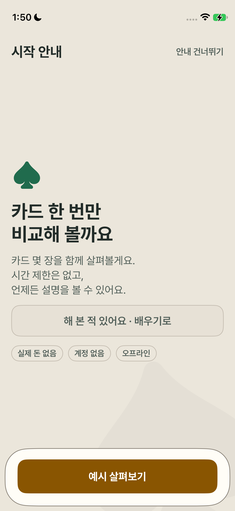
Before · actual build 21 screenshot on your iPhone 12 miniThe app opens at “Getting started” / “시작 안내.” Its headline is “Try one simple hand” / “카드 한 번만 비교해 볼까요.” It introduces the exercise, but never gives the app title a dedicated welcome.
Preserve: warm tone, untimed learning, help availability, experienced-user bypass, bottom action and native typography.
Change: separate app identity from instruction. The new intro uses green; the guide uses a different background and an explicit guide heading. The existing preamble is replaced, not duplicated.
The before screenshot is native. Every after screen below is an HTML proposal.
Option A · Recommended
Quiet brand
Glass Table and Start are the whole introduction. Centered brand, generous breathing room, one bottom action.
First guide screen: The next screen immediately teaches a pair. Replace the current text-only guide preamble, so this adds brand recognition without adding another explanation screen.
Best match for your request. It is calm and distinct, but does not explain the product until the guide.
Try A in English 한국어로 보기
Option B · Alternative
Type-led invitation
A large left-aligned, two-line title and one short sentence about learning one hand at a time.
First guide screen: Put the same pair teaching in a paper/charcoal demonstration panel. Move the longer no-timer/help promise out of the old welcome and into contextual guide help.
Clearer to a first-time visitor, but the extra reading slightly delays the first card interaction.
Try B in English 한국어로 보기
Option C · Alternative
Cards as the identity
A simple card emblem establishes poker before the title. One bottom Start action.
First guide screen: The card-outline geometry carries into the pair example. This makes the transition feel connected while the background and guide header mark a new task.
Strongest visual continuity, but avoid making the emblem look tappable or turning the screen into a casino splash.
Try C in English 한국어로 보기
The decisions behind the proposals
| Background | Welcome: native table green #153D33 in both modes, matching the fixed poker-table object. The prototype also lets you compare optional deeper #102A23 felt. Guide: existing #EBE6DB paper or #17191C charcoal. Preserve the rest of the app’s palette; the green welcome is a bounded brand surface. |
|---|
| Meaning beyond color | “Glass Table” becomes “Getting started” / “시작 안내.” A new task and example appear. Color supports this change; it does not carry the meaning alone. |
|---|
| Bottom actions | Start / 시작하기 stays in the same bottom action area as the guide’s next step. Amber keeps its existing role: light amber on green uses the table’s existing accent, while the light guide uses its familiar deeper amber. No centered button that jumps to the bottom on the next screen. |
|---|
| Guide content | Start leads to a concrete pair example, then the existing comparison activity. No knowledge quiz returns to the front of this sequence; no extra “ready?” page is added. The approved five comparisons remain the intended native course scope. |
|---|
| Experienced users | Keep Skip guide in the guide header. The intro stays one primary action. Skipping should keep its existing behavior and never grant completion credit. |
|---|
| When it appears | Proposed first-run welcome, not a recurring gate on every app launch. Returning users resume their activity. Guide replay starts at the guide; the brand intro does not become an extra replay step. |
|---|
| Motion | A native forward transition into the guide, reversible with visible Back. No timer, loop, delayed button or dramatic celebration. Reduced Motion uses a quiet/static equivalent. HTML motion only approximates native behavior. |
|---|
| English / Korean | Brand name stays “Glass Table.” Pair short semantic groups to equal normal line counts. Korean wraps at words; no letter splitting, font shrinking or clipping to force parity. Large text may reflow naturally. |
|---|
| Saved state | Future implementation must preserve question seeds, existing saved guide steps, skip/resume, progress and recovery. The welcome must not reset or re-assess existing learners. |
|---|
How this fits Apple’s guidance
Apple permits branded welcome/onboarding content, and recommends brief onboarding that teaches through the experience. That supports a single brand screen followed by cards rather than more introductory text. Apple: Branding · Apple: Onboarding
The tappable welcome is an app screen. The OS launch screen should match the first appearance and disappear when ready; it should not create a second timed intro. Apple: Launching
Keep color roles and contrast consistent across the transition. A labeled guide header and task change help make the new stage clear alongside its background. Apple: Color
Your review point
Choose A, B or C—or combine A’s minimal wording with C’s card emblem. My recommendation remains A. The prototypes let you judge the whole welcome → guide transition rather than the welcome in isolation.
English, Korean, light and dark
36 HTML proposal screenshots: 24 normal-size welcome/guide views and 12 enlarged-text guide views. Each option is shown in both languages and themes. Open an image for full size, or try the clickable prototype.
 A · intro · EN · lightA · guide · EN · light
A · intro · EN · lightA · guide · EN · light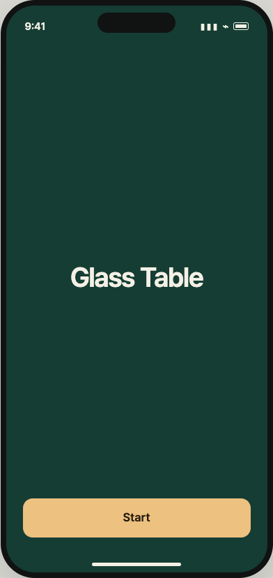
A · intro · EN · dark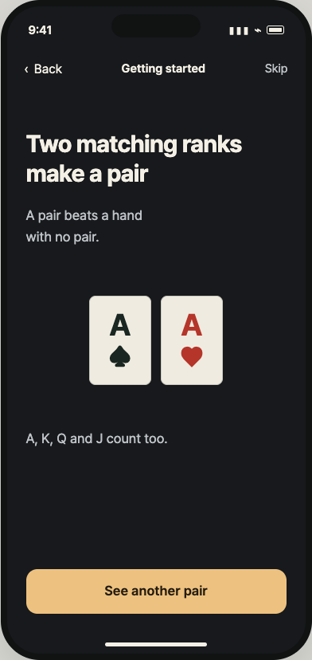
A · guide · EN · dark A · intro · KO · light
A · intro · KO · light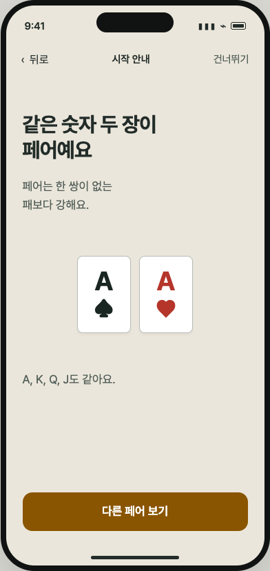
A · guide · KO · light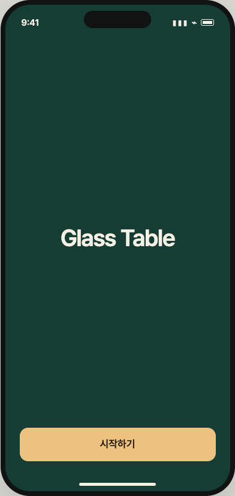
A · intro · KO · dark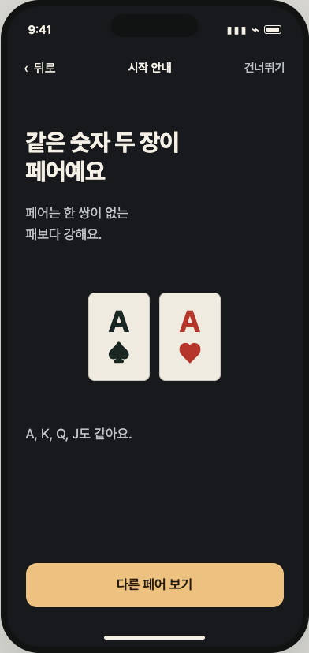
A · guide · KO · darkB · intro · EN · lightB · guide · EN · light B · intro · EN · dark
B · intro · EN · dark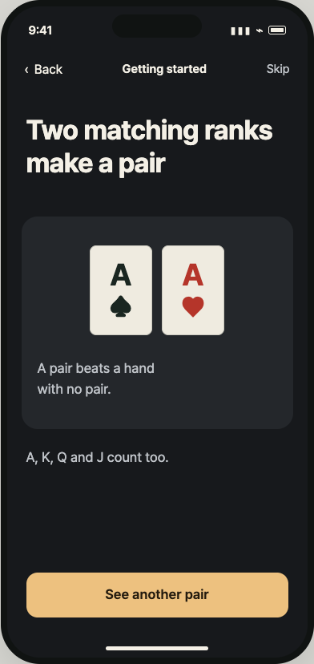
B · guide · EN · dark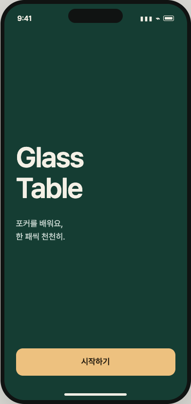
B · intro · KO · light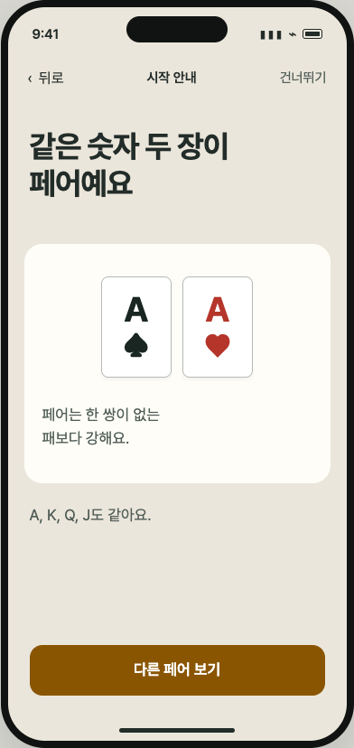
B · guide · KO · light B · intro · KO · dark
B · intro · KO · dark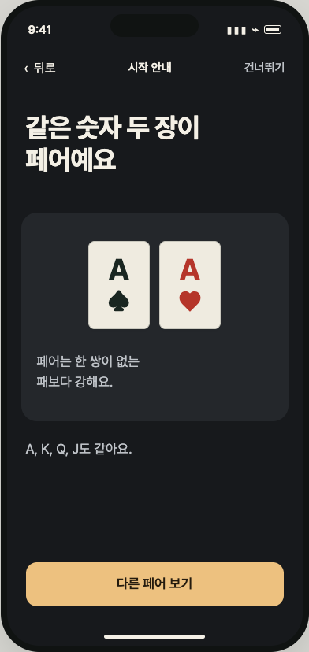
B · guide · KO · darkC · intro · EN · lightC · guide · EN · light C · intro · EN · dark
C · intro · EN · dark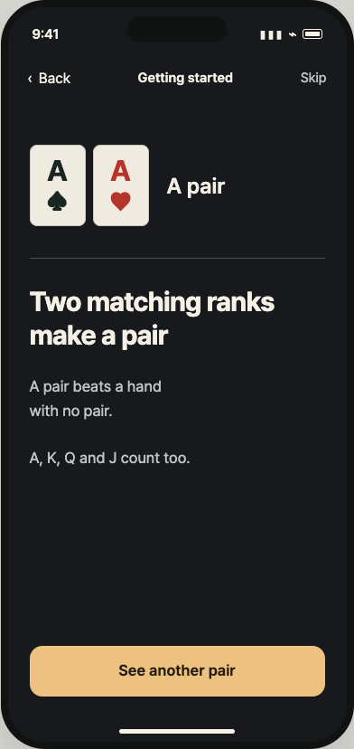
C · guide · EN · dark C · intro · KO · light
C · intro · KO · light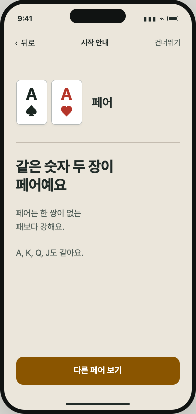
C · guide · KO · light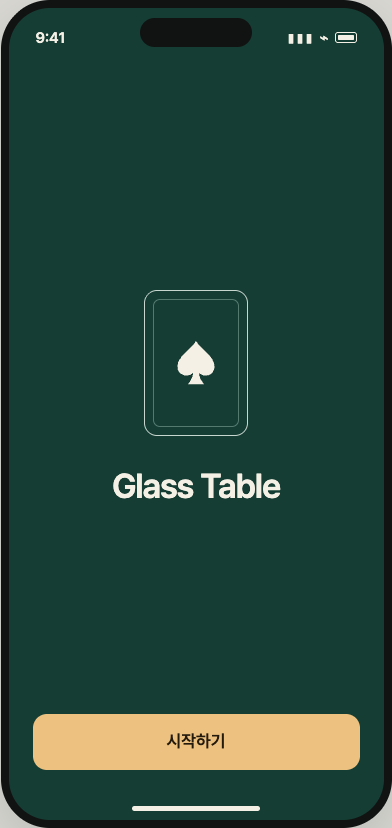
C · intro · KO · dark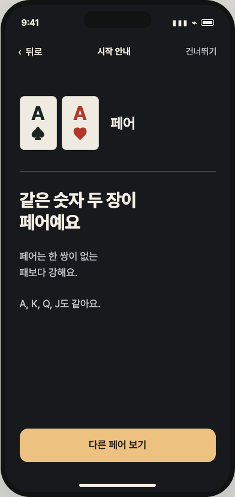
C · guide · KO · dark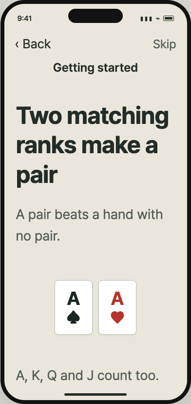
A · guide · EN · light · 165% text, scroll for action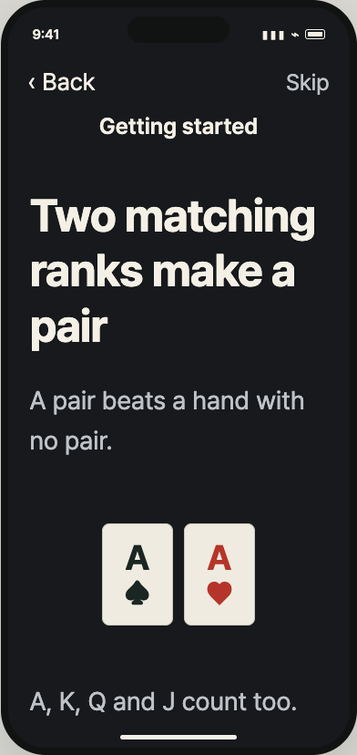
A · guide · EN · dark · 165% text, scroll for action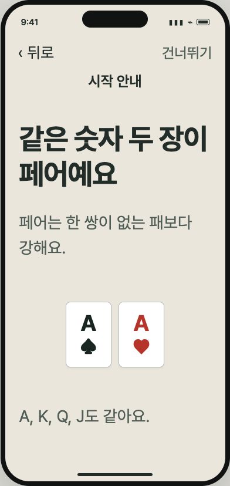
A · guide · KO · light · 165% text, scroll for action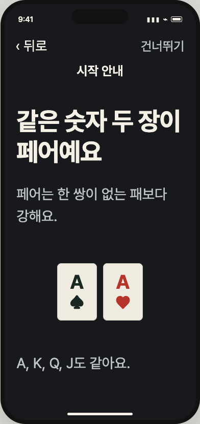
A · guide · KO · dark · 165% text, scroll for action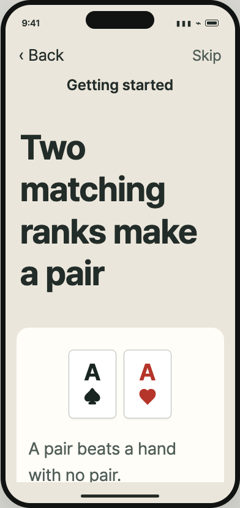
B · guide · EN · light · 165% text, scroll for action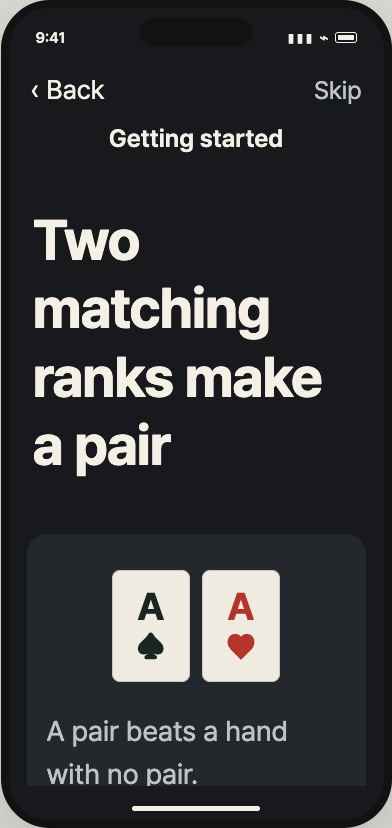
B · guide · EN · dark · 165% text, scroll for action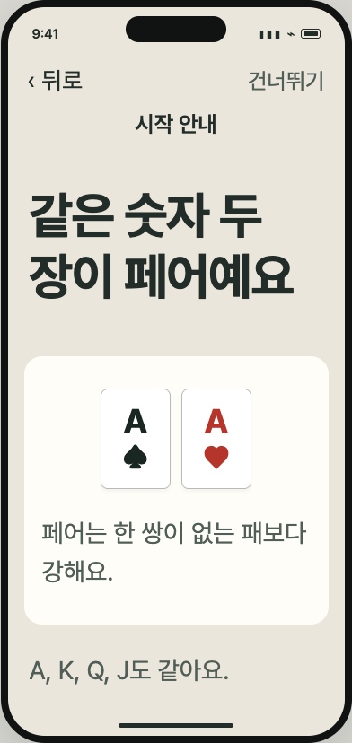
B · guide · KO · light · 165% text, scroll for action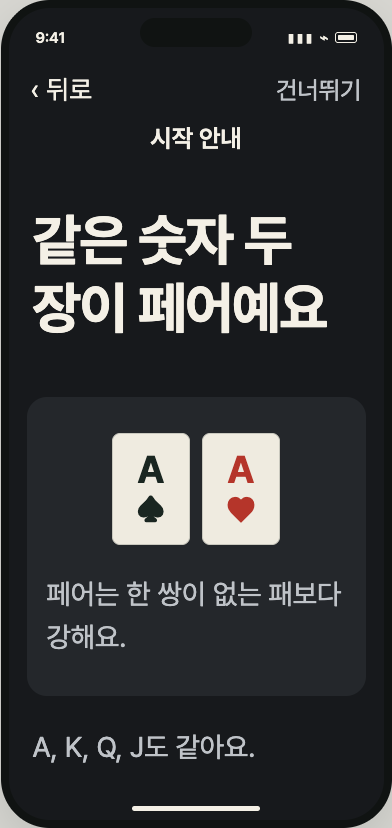
B · guide · KO · dark · 165% text, scroll for action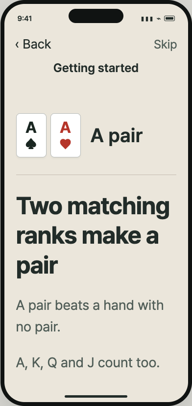
C · guide · EN · light · 165% text, scroll for action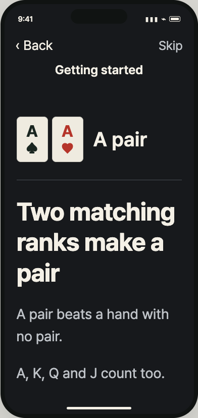
C · guide · EN · dark · 165% text, scroll for action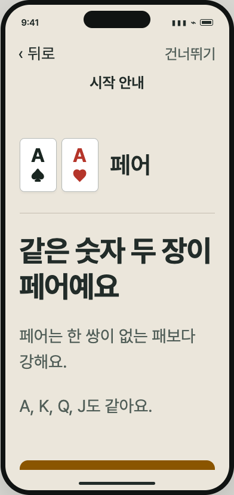
C · guide · KO · light · 165% text, scroll for action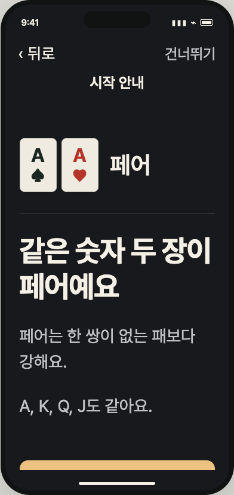
C · guide · KO · dark · 165% text, scroll for actionChecks and implementation limits
24 clickable-flow combinations passed: three options × English/Korean × light/dark × normal/165% text. Start, guide, explanation, Back and Skip transitions worked; primary controls were reachable by scrolling without horizontal overflow. Normal guide line groups match in every language/theme pair: heading 2/2, explanation 2/2, note 1/1. Primary button geometry stays identical across the 24 normal welcome/guide frames.
Detailed browser verification · Research and constraints
These screens are design proposals, not Swift screenshots or a device build. They establish layout and flow choices, not learner engagement or retention. Native safe areas, gesture behavior, Dynamic Type, VoiceOver and real iPhone rendering need implementation verification.
The installed app remains 1.0 (21). This exploration does not change phone data or the app source.